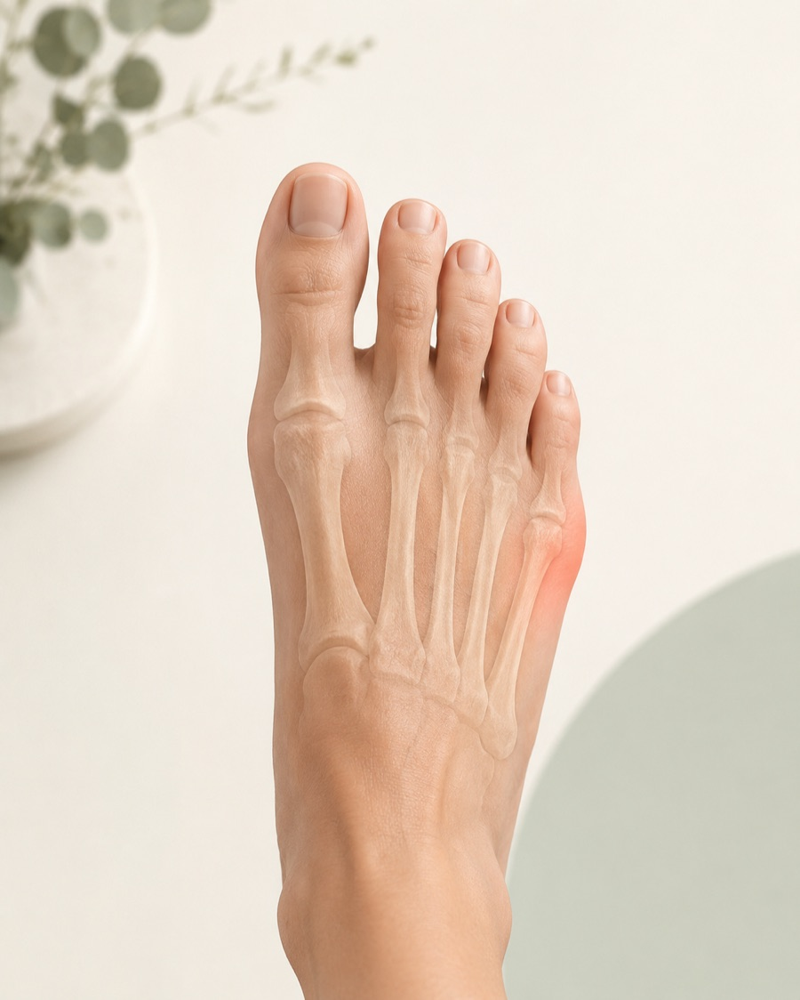

Wat is een tailor's bunion of bunionette?
Een tailor's bunion is een pijnlijke knobbel of prominentie aan de buitenzijde van de voorvoet, bij de kleine teen. De medische term die vaak wordt gebruikt is bunionette. De plek ligt meestal bij de kop van het vijfde middenvoetsbeentje, waar dit botje het MTP-5-gewricht vormt met de kleine teen.
De naam lijkt op hallux valgus, maar het gaat om de andere kant van de voorvoet. Bij hallux valgus zit de druk aan de binnenzijde bij de grote teen; bij een bunionette zit de druk aan de buitenzijde bij de kleine teen. Soms is er een echte standsafwijking van het vijfde middenvoetsbeentje of de kleine teen. Soms is vooral de voorvoet breed of is er een lokale botvorm die in schoenen druk geeft.
Het is dus niet alleen "eelt" of "een schoenprobleem". Schoendruk kan de klachten uitlokken, maar de onderliggende vorm van de voet, huid, slijmbeurs, teenstand en manier van belasten bepalen vaak waarom juist die plek gevoelig wordt.

Een pijnlijke buitenrand van de voorvoet kan passen bij een tailor's bunion, maar ook bij huiddruk, slijmbeursirritatie, stressletsel, jicht, infectie of andere voorvoetklachten.
Welke klachten kunnen erbij passen?
Veel mensen merken pijn in smalle schoenen of bij lang lopen. De buitenzijde van de voorvoet kan rood, gevoelig, verdikt of gezwollen zijn. Soms ontstaat er eelt of een likdoorn precies op de drukplek. De huid kan branderig aanvoelen of gevoelig zijn bij aanraken.
De kleine teen kan meer naar binnen wijzen of tegen de vierde teen drukken. Daardoor kan er ook tussen de tenen eelt, irritatie of schoenconflict ontstaan. Bij sommige voeten speelt een bredere voorvoet, hallux valgus, hamerteen of klauwteen, of een holvoet/cavovarus-stand mee in de drukverdeling.
Klachten zijn niet bij iedereen hetzelfde. De een heeft vooral huiddruk, de ander vooral pijn rond het MTP-5-gewricht. Soms gaat het op en af afhankelijk van schoenen, werk, sport, eeltzorg of belasting.
Wat kan het ook zijn?
Eelt of een likdoorn kan op zichzelf al veel pijn geven, zeker als de druk precies op een klein huidgebied zit. Een geirriteerde slijmbeurs aan de buitenzijde kan roodheid en zwelling geven. Bij wondjes, pus, toenemende warmte of ziek zijn moet infectie worden meegewogen.
Pijn aan het vijfde middenvoetsbeentje kan ook passen bij een stressreactie of stressfractuur, vooral bij recente belastingstoename, sport, lokaal botpijnpunt of zwelling. Acute roodheid en hevige gewrichtspijn kan soms ook bij jicht passen, al zit jicht vaker bij de grote teen.
Als de pijn meer onder de bal van de voet zit, past metatarsalgie soms beter in beeld. Bij brandende of tintelende pijn richting tenen moet ook aan Morton neuroom worden gedacht. Pijn rond de basis van een teen met instabiliteit of zwelling kan meer passen bij MTP- of plantaire plaatklachten.
Tailor's bunion
Lokale druk en prominentie bij het vijfde middenvoetsbeentje, vaak gevoelig in smalle schoenen.
Eelt of likdoorn
Pijn kan vooral uit de huid komen, met een kleine harde drukplek die in schoenen wordt belast.
Stressletsel
Meer botpijn, zwelling en toename bij belasting, soms na sportopbouw of langere wandelbelasting.
Lees meer over stressletselOnderzoek en diagnose
De beoordeling begint met de exacte plek van de pijn. Zit die op de buitenrand van de vijfde middenvoetskop, onder de voorvoet, tussen de tenen of op het bot van het middenvoetsbeentje? Ook de huid vertelt veel: eelt, likdoorn, wondje, roodheid, zwelling en schoenslijtage kunnen richting geven.
Bij lichamelijk onderzoek wordt gekeken naar schoenruimte, voorvoetbreedte, stand van de kleine teen, beweeglijkheid van MTP-5, drukpijn op bot of huid, eeltpatroon, hallux valgus, hamertenen, voetboog, cavovarus-stand en de manier waarop de buitenrand van de voet belast wordt.
Een belastingsrontgenfoto kan in geselecteerde situaties helpen om de stand van het vijfde middenvoetsbeentje, de vorm van het gewricht, artrose, stressletsel of andere botafwijkingen te beoordelen. Beeldvorming is vooral zinvol wanneer klachten blijven bestaan, de diagnose onzeker is of wanneer een operatie wordt overwogen.
Eerst niet-operatieve opties
De eerste stap is meestal druk verminderen. Dat klinkt eenvoudig, maar vraagt soms precies kijken naar schoenpasvorm, huid, voorvoetbreedte en belasting. Een bredere teenbox, zachter bovenwerk, minder puntige schoen en minder hakhoogte kunnen druk op de buitenrand verminderen.
Een brede teenbox en soepel bovenwerk kunnen lokale druk op de knobbel verminderen.
Padding of een beschermende voorziening kan de huid ontzien, mits het de schoen niet krapper maakt.
Drukverdeling, voorvoetsteun of correctie van buitenrandbelasting kan in geselecteerde situaties helpen.
Eelt- of likdoornzorg hoort bij een passende zorgverlener, vooral bij diabetes of verminderd gevoel.
Tijdelijke belastingaanpassing kan zinvol zijn wanneer de huid of slijmbeurs geirriteerd is. Pijnstilling of ontstekingsremmende medicatie hoort bij persoonlijke medische afweging via de eigen arts of apotheek, zeker bij andere aandoeningen of medicijngebruik.
Wanneer specialistische beoordeling relevant kan zijn
Specialistische beoordeling kan passend zijn bij aanhoudende pijn ondanks goede schoen- en drukmaatregelen, terugkerende huidproblemen, wondrisico, duidelijke standsafwijking, verdenking op stressletsel of wanneer de pijn niet goed past bij een gewone bunionette.
Een operatie is geen standaardoplossing voor een tailor's bunion. Als een operatie wordt besproken, gaat het meestal om een combinatie van klachten, huidproblemen, rontgenbeeld, botprominentie, stand van het vijfde middenvoetsbeentje, activiteit en verwachtingen. Soms kan correctie of verplaatsing van het vijfde middenvoetsbeentje worden overwogen; soms is dat juist niet passend.
De afweging moet rustig gebeuren, omdat de buitenzijde van de voorvoet veel invloed heeft op schoenpasvorm, drukverdeling en herstelbelasting. Belangrijk is dat de behandeling niet alleen de knobbel kleiner wil maken, maar past bij de pijnbron, huid, stand en belasting van de hele voorvoet.
Wat bespreek je tijdens een consult?
Neem schoenen mee waarin de klacht duidelijk optreedt, en eventueel steunzolen of beschermers die al geprobeerd zijn. Het helpt om te vertellen of de pijn vooral uit de huid, het gewricht of het bot lijkt te komen, wanneer eelt ontstaat en of er wondjes of roodheid zijn geweest.
Ook de bredere voetvorm is relevant: hallux valgus, hamertenen, holvoet/cavovarus, eerdere breuken, sportbelasting en beroep kunnen de druk op de buitenzijde van de voorvoet beinvloeden. Vaak is het doel eerst om te bepalen of het probleem vooral huiddruk, schoenpasvorm, botstand, stressletsel of een combinatie daarvan is.
Waar kan je terecht?
Deze pagina is algemene uitleg op matthijsvandam.nl en geen officiële ETZ-patiëntinformatie. Bij nieuwe of niet-acute drukklachten is de huisarts vaak het eerste aanspreekpunt; afhankelijk van de situatie kunnen podotherapie, voetzorg of schoentechnische zorg een rol spelen.
Als specialistische beoordeling nodig is, loopt verwijzing via de gebruikelijke zorgkanalen. Voor afspraken, planning, uitslagen en praktische ziekenhuisinformatie zijn de officiële ETZ-kanalen leidend.
Deel via deze website geen medische gegevens, foto's, verwijsbrieven of vragen over lopende zorg. Gebruik deze website niet bij spoed of acute klachten. Neem dan contact op met de huisarts, huisartsenpost, de geldende spoedlijn of bel 112 wanneer dat nodig is.
Veelgestelde vragen
Wat is een tailor's bunion of bunionette?
Een tailor's bunion of bunionette is een pijnlijke prominentie aan de buitenzijde van de voorvoet, meestal bij de kop van het vijfde middenvoetsbeentje en het MTP-5-gewricht van de kleine teen.
Is een knobbel bij de kleine teen altijd een tailor's bunion?
Nee. Eelt, likdoorn, slijmbeursirritatie, huidproblemen, jicht, infectie, stressletsel of andere voorvoetklachten kunnen op dezelfde plek pijn geven.
Welke rol spelen schoenen?
Schoenen met weinig ruimte bij de voorvoet kunnen druk op de buitenrand vergroten. Dat kan klachten uitlokken, maar voetvorm, botstand, teenstand en huiddruk kunnen ook meespelen.
Wat is het verschil met metatarsalgie of Morton neuroom?
Bij een tailor's bunion zit de pijn meestal aan de buitenzijde van de voorvoet bij de kleine teen. Metatarsalgie gaat vaker over pijn onder de bal van de voet; Morton neuroom geeft vaker brandende of tintelende zenuwklachten richting tenen.
Is beeldvorming altijd nodig?
Niet altijd. Een belastingsrontgenfoto kan in geselecteerde situaties helpen om botvorm, stand en andere oorzaken te beoordelen, vooral wanneer een operatie of stressletsel wordt overwogen.
Moet een tailor's bunion geopereerd worden?
Niet automatisch. Vaak worden eerst schoenruimte, drukbescherming, zoolaanpassing en huidzorg besproken. Een operatie kan alleen in geselecteerde situaties worden overwogen bij aanhoudende pijn, huidproblemen of duidelijke standsafwijking.